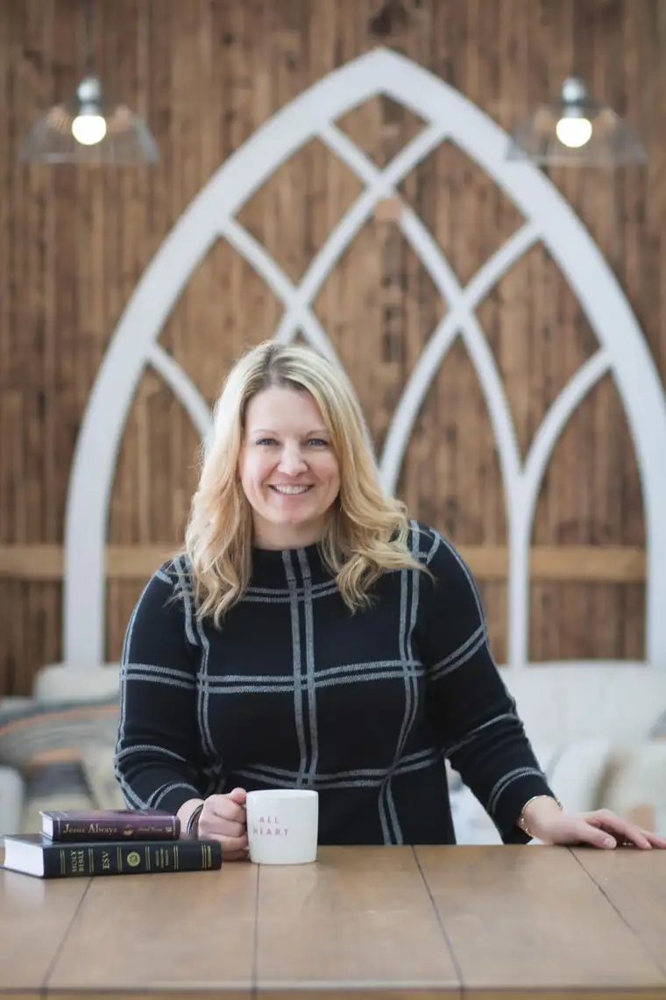

FARGO — In the six and a half years since Eco Chic Boutique opened here, much has changed.
While the store’s gradual shift from a baby-mom home store to a home décor, furniture and paint boutique has been noticeable, however, the Holy Spirit whispers woven into this transformational tale have been perhaps less obvious.
“There were definitely a few spots along our journey where the Lord placed people and products and things in our path,” says owner Maria Bosak.
Bosak left a 12-year career to start her own business, and after selling Shaklee products at home, she felt called to open a store focusing on eco-friendly products.
But things didn’t take off as hoped, and the business soon was on the verge of demise. Three months behind on rent, Bosak says, the nail-biting — and prayers — began in earnest.
Night after night, she’d divulge to her husband, Tate, that the cloth diapers hadn’t sold but the hutch on which they hung had drawn several inquiries. Then, Bosak says, one exasperated evening as they talked in bed, Tate blurted out, “Sell the damn hutch.”
“The next day, I put both the hutch and the dining room table up for sale, and we ‘sold the damn hutch.’ ” Bosak recalls.
It was a moment of reckoning that the business maybe needed a fresh direction. “We found that what people were looking for was repurposed furniture, so we shifted our business model,” she says.
Bosak will forever be grateful for the patience of her landlord Sam Skaff. “Sam could have kicked us out, but he never did … That was a godsend,” she says.
Soon, Bosak began attending Junk Market events in the cities featuring repurposed furniture and salvaged items and noticed the long lines of buyers. Would such a thing work in Fargo, she wondered?
Skaff agreed to let her use the parking lot at no cost, so one chilly Saturday morning in May 2012, Maria and 33 vendors gathered at the business on 17th Avenue South — and waited.
Twenty minutes before start time, the parking lot remained eerily quiet. Bosak began to panic. After slipping into the store to take a phone call, she says, she emerged to a tap on her shoulder.
“It was my husband, pointing to the line that was now wrapping around the building,” Bosak says.
The event was a wild success. That night, the couple went home “more tired than on our wedding day,” Bosak says. Splurging on take-out food, they sat down to count the profits.
“After we took out the $28 for the food, we counted the rest, and we were within three dollars of what we needed to pay three months’ rent,” Bosak says, her voice breaking.
Around that time, Bosak stumbled upon a new product made just for furniture-painting and decided to try it out. After mentioning the project on Facebook, inquiries began tumbling in.
Discovering the paint was highly sought, but hard to obtain, Bosak gambled again, investing in the product. “It quickly put us on the map,” she says. “It was one of the largest trends sweeping the U.S. at that time.”
She offered furniture-painting classes at her Fargo shop and pursued a second store in Bismarck, which opened loan-free. So many things had fallen into place, she says, but God wasn’t done blessing her.

Katie Murrey, who’d just moved to town from Georgia, was walking her dog past the store one day and noticed Eco Chic. When she stopped to inquire about openings, Bosak says she wasn’t hiring, but when Katie offered herself as a volunteer, Bosak agreed.
“She was fantastic,” she says. “She was friendly and anticipated my needs. She was just delightful.”
Within days, Bosak hired her. “I was so tired of being here by myself,” she says. “Something about it just felt right.”
Then, as Murrey filled out the employee paperwork, Bosak’s jaw dropped to see her given name — Mary — and to learn her husband’s name was Joseph, and why they’d come to Fargo.
“I looked at her and said, ‘Let me get this straight. You move here to plant a church, your name is Mary, his name is Joseph and he’s a carpenter,'” Bosak says, “‘You’ve got to be kidding me.'”
Katie later introduced Bosak to Michelle McCrea, also part of the church-planting team, who now works in the boutique, too.
McCrea says the work atmosphere is extraordinary. “When we have staff meetings, we do a devotional and prayer time, and Maria is always so interested in the people who work for her,” she says. “We’re definitely more like a family.”
Murrey says she didn’t realize immediately God’s hand in her initial attraction to the store, but soon, begin praying tirelessly for Bosak and her business.
“I’d leave the store and just stand there and pray over the store and for her family,” she says. “The Lord was really wanting to move in Maria’s life.”
She quickly came to see that Bosak needed to be refreshed professionally and spiritually.
“I just fell in love with Maria and who she was, and I wanted to serve her and devote myself to that,” Murrey says. “Then God just opened up doors in her and the store that we didn’t expect.”
Bosak agrees that her faith has grown through the process, especially in trusting in God and his provisions. And though she’d never want to come off as forceful about her Christian faith, she says, she won’t deny it, either.
“I think our actions are really what lead people to understand who and what we are,” she says. “We have to show what it means to be a follower of Christ, and being a follower of Christ is about love and acceptance.”
Looking back, she’s grateful for the trials along the way. “When we were the poorest, we were the most connected,” she says of her marriage to Tate. “We had to cling to one another and communicate like never before. Those were some tough years, but also some of the best.”
[For the sake of having a repository for my newspaper columns and articles, I reprint them here, with permission, a week after their run date. The preceding ran in The Forum newspaper on Feb. 18, 2017.]